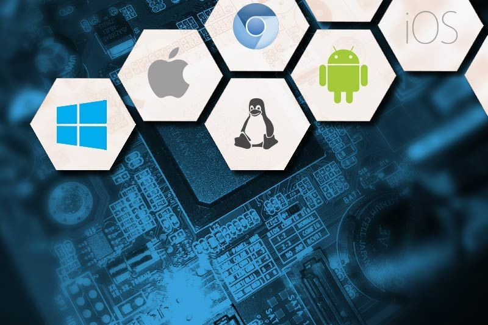
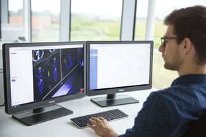

O que é um software?

Software é uma sequência de instruções escritas para serem interpretadas por um computador para executar tarefas específicas. Também pode ser definido como os programas, dados e instruções que comandam o funcionamento de um computador, smartphone, tablet e outros dispositivos eletrônicos. O software é o responsável por fazer a máquina compreender e executar os comandos do usuário. É classificado como a parte lógica e imaterial, cuja função é fornecer instruções para o hardware. O hardware é toda a parte física que constitui o dispositivo. A palavra inglesa software foi usada pela primeira vez em 1958 em um artigo escrito pelo cientista americano John Wilder Tukey. Foi também ele o responsável por introduzir o termo "bit" para designar "dígito binário".
O que é um sistema operacional?
Um sistema operacional (SO) é um software essencial que atua como intermediário entre o hardware de um dispositivo e os usuários ou aplicativos. Ele gerencia os recursos do sistema, como memória, processador e dispositivos de entrada e saída, permitindo que diferentes programas funcionem de maneira eficiente e integrada.
O que é uma licença de software?
Serviços digitais como programas para computadores e dispositivos móveis apresentam meios de aquisição diferentes de produtos físicos comuns, pois são protegidos por uma licença de software. Os diferentes modelos de licenciamento podem causar confusão na hora de contratá-los. Como a tecnologia é uma vantagem competitiva em qualquer segmento e ainda otimiza a experiência de usuários casuais, é uma boa opção entender mais sobre essas licenças e suas variações. Pensando nisso, preparamos um conteúdo especial para você conhecer algumas das modalidades mais oferecidas no mercado. Confira!
O que é um Software Licenciado?

O software licenciado refere-se a um programa de computador que é protegido por um contrato de licença, que define as condições de uso
O que é um Software livre?
Software proprietário e software livre são conceitos opostos no mundo da tecnologia, cada um com características e propósitos distintos. O software proprietário é aquele cujo código-fonte é fechado e controlado exclusivamente pelo criador ou pela empresa que o desenvolveu. Ele não pode ser copiado, modificado ou redistribuído sem autorização explícita. Geralmente, é necessário adquirir uma licença para utilizá-lo, e as atualizações podem exigir novos pagamentos. Exemplos incluem o Microsoft Office e o Adobe Photoshop. Esse modelo é amplamente utilizado para fins comerciais, garantindo controle total sobre o produto e suas funcionalidades.
O que é um Software Proprietário?

O Software proprietário é aquele em que um usuário tem possibilidades limitadas para usar, modificar ou redistribuí-lo e muitas vezes a sua licença tem um custo. É chamado de software proprietário, não livre, privado ou privativo ao tipo de programas informáticos na qual o usuário não pode acessar o código fonte ou ter acesso restrito e, portanto, está limitado em suas possibilidades de uso, modificação e redistribuição.
O que é um software de Sistema?
Na informática , é denominado software de sistema ou software base para a série de programas pré-instalados no computador ou sistema computacional e que permitem a interação com o Sistema Operacional (o software que rege o funcionamento de todo o sistema e garante sua operabilidade) , para apoiar outros programas e garantir o controle digital do hardware .
O que é um software Aplicativo?
Um software aplicativo trabalha com a execução ordenada de tarefas a fim de coletar dados e fazer a organização de informações, em outras palavras, o processamento de dados. Algumas das funções dos softwares aplicativos são realizar cálculos, organizar e executar tarefas, processar informações, entre outros.
O que é um software de Programação?

Software é uma sequência de instruções escritas para serem interpretadas por um computador para executar tarefas específicas. Também pode ser definido como os programas, dados e instruções que comandam o funcionamento de um computador, smartphone, tablet e outros dispositivos eletrônicos. O software é o responsável por fazer a máquina compreender e executar os comandos do usuário. É classificado como a parte lógica e imaterial, cuja função é fornecer instruções para o hardware. O hardware é toda a parte física que constitui o dispositivo. A palavra inglesa software foi usada pela primeira vez em 1958 em um artigo escrito pelo cientista americano John Wilder Tukey. Foi também ele o responsável por introduzir o termo "bit" para designar "dígito binário".
O que é um software de diagnóstico de software ?
O que é software de diagnóstico de software ? O software de diagnóstico de software é uma ferramenta essencial para a manutenção e operação eficiente de sistemas e aplicativos. Ele atua como um detetive, identificando e solucionando problemas antes que se tornem grandes dores de cabeça. O software de diagnóstico verifica o hardware e o software do sistema, identificando erros, inconsistências e problemas em potencial, e relata essas descobertas em um formato compreensível. Além disso, fornece informações focadas para uma resolução mais rápida e ajuda a otimizar o desempenho do sistema, minimizando interrupções e aumentando a produtividade.
O que é um software de diagnóstico de hardware ?
Um programa de diagnóstico de hardware é uma ferramenta essencial para identificar e solucionar problemas relacionados ao hardware de um computador. Esses programas são projetados para testar e analisar os componentes físicos de um sistema, como processador, memória, disco rígido, placa-mãe, placa de vídeo, entre outros.